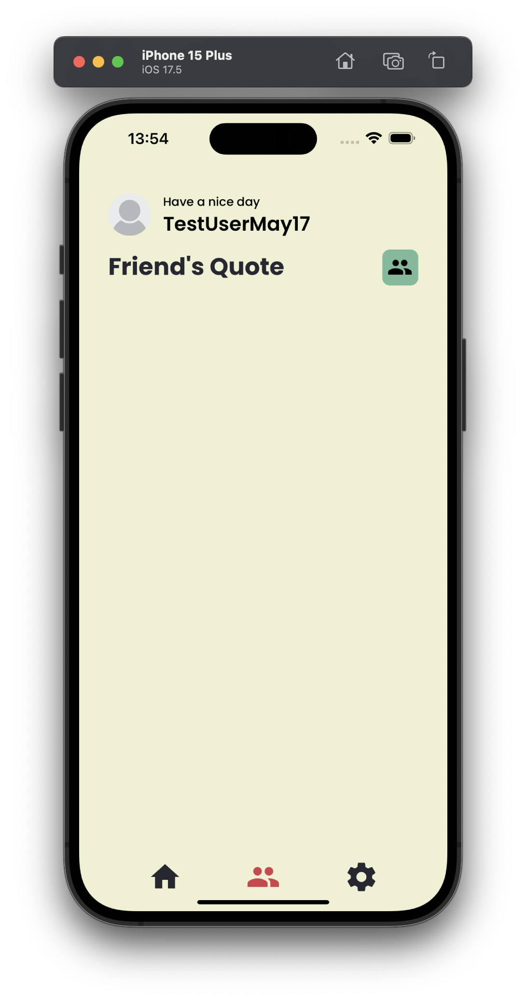
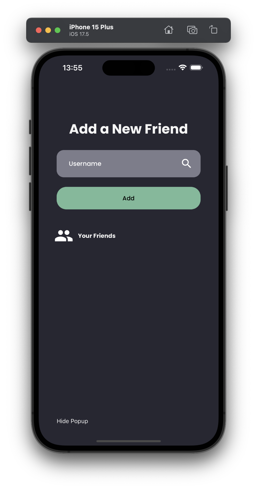
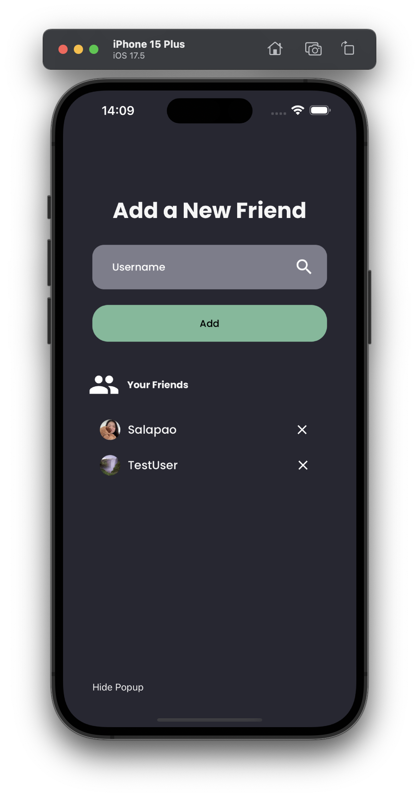
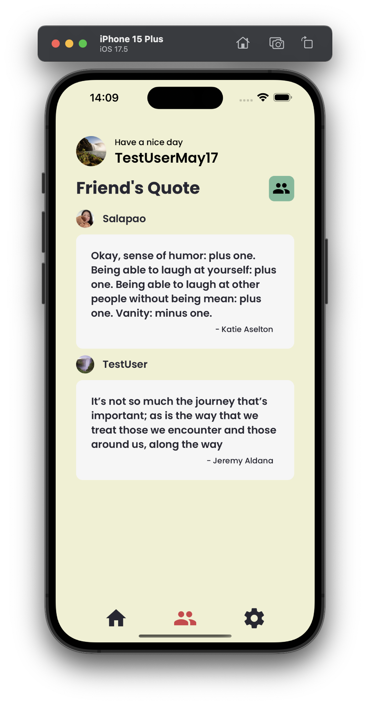

How to add / remove Friends?
In JustSayin, adding friends allows you to share and view daily quotes with each other, enhancing your experience by integrating social interactions with daily inspirations. This guide details the steps to manage your friends list, including how to add and remove friends.
Adding Friends
Access the Friends Feature
Open up JustSayin
Navigate to the friend’s tab on the bottom of the screen
In the 'Friends' tab, tap on the Green Icon button located on the top left of your screen.
Add a new Friend
You will see a search bar where you can enter the username of the person you wish to add.
Type the username of your friend in the search bar and tap the 'Add' button below to add the user.
Confirmation
Once you tap 'Add', the app will search for the username. If the username exists, your friend will be added to your 'Your Friends' list, which is visible at the bottom of the same screen.
You will see their name appear under 'Your Friends', indicating that they have been successfully added.
You can now see your friends daily quote in the Friends Tab. 
Removing Friends
Access the Friends Feature
Open up JustSayin
Navigate to the friend’s tab on the bottom of the screen
In the 'Friends' tab, tap on the Green Icon button located on the top left of your screen.
Removing a Friend
Find the friend you wish to remove and tap the 'X' next to their name.
Confirming
Their name will disappear from your friend list
You will no longer receive updates on their daily quotes.
Video Tutorial:
Notes:
Adding friends not only allows you to share your own quotes but also to see a curated list of inspirations from those you are connected with, making each day a shared experience of reflection and motivation.
If you cannot find a friend using their username, ensure that you have the correct spelling, or reach out to them to confirm their account details.